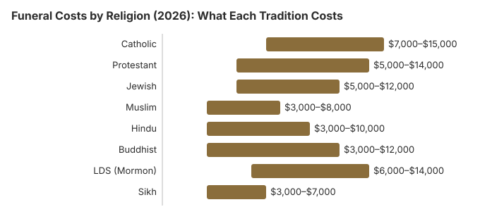

Funeral Costs by Religion (2026): What Each Tradition Costs
Religious traditions shape nearly every aspect of a funeral -- from the timing of the service to the type of container used, from whether embalming is permitted to whether cremation is acceptable. These requirements directly affect cost. Some traditions call for simplicity that naturally reduces expenses, while others involve multi-day ceremonies with specific requirements that increase costs. This guide walks through eight major religious traditions, explaining how each one approaches death and burial and what the typical service includes. The dollar totals below are planning ranges, not official statistics. Where a national price is cited, it is an NFDA 2023 median (latest available), not a CANA figure and not a Consumer Price Index adjustment.
How these ranges are built
The national anchors on this page are NFDA medians, not a formula that turns those medians into a faith average. The NFDA 2023 General Price List Study (latest available; NFDA's statistics page still cited these medians as of its September 29, 2025 update) reports $8,300 for a funeral with viewing and burial, excluding the cemetery plot, vault, and monument, and $6,280 for a funeral with viewing and cremation. The 2024 NFDA Cremation and Burial Report reprints the 2023 direct-cremation medians of $2,645 and $2,750 and the immediate-burial medians of $2,995 and $3,720. The tradition totals in the table are editorial planning ranges that were already printed on each faith page. They are not adjusted to 2026 with the Consumer Price Index, and they are not a blend of the CANA annual report. Rows for a Mass offering, a simple wood casket, a kafan, a pandit, temple clothing, or a cemetery plot are planning ranges named on the page, not prices from a published church survey. Reviewed 2026-10-24.
Cost Overview by Religion
| Religion | Planning range | Burial or Cremation | Embalming | Key Cost Factor |
|---|---|---|---|---|
| Catholic | $7,000 – $15,000 | Burial preferred; cremation permitted | Common | Full Mass, casket, cemetery |
| Protestant | $5,000 – $14,000 | Both common | Common | Varies widely by denomination |
| Jewish | $5,000 – $12,000 | Burial required (Orthodox) | Prohibited (Orthodox) | Simple casket, quick burial |
| Muslim | $3,000 – $8,000 | Burial required | Prohibited | No casket required; shroud burial |
| Hindu | $3,000 – $10,000 | Cremation required | Not typical | Cremation ceremony; ash scattering |
| Buddhist | $3,000 – $12,000 | Cremation preferred | Varies | Multi-day observances possible |
| LDS (Mormon) | $6,000 – $14,000 | Burial preferred | Common | Temple clothing, traditional burial |
| Sikh | $3,000 – $7,000 | Cremation required | Not typical | Cremation; community support |

Catholic $7,000 to $15,000, Jewish $5,000 to $12,000, Muslim $3,000 to $8,000, Hindu $3,000 to $10,000, Buddhist $3,000 to $12,000, and LDS $6,000 to $14,000 are planning ranges, not official statistics. Each of those six figures was already printed on its own tradition page, and this overview uses the same figure so the two pages do not disagree. None of them is a median from the NFDA 2023 General Price List Study (latest available; NFDA's statistics page still cited these medians as of its September 29, 2025 update), which does not publish costs by faith, and none is taken from a diocese, synagogue, mosque, temple, or church price survey. The burial-leaning ranges (Catholic, Jewish, and LDS) are an editorial bracket around the NFDA median of $8,300 for a funeral with viewing and burial, a median that excludes the cemetery plot, vault, and monument, plus the plot, casket, vault, or marker rows named in that section. The Muslim range starts near the NFDA immediate-burial medians of $2,995 with a family-supplied container and $3,720 with a funeral-home container, reprinted in the 2024 NFDA Cremation and Burial Report, and leaves room for the Islamic cemetery plot named below. The Hindu and Buddhist ranges start near the NFDA direct-cremation medians of $2,645 and $2,750 and can extend through the $6,280 median for a funeral with viewing and cremation, plus the priest, memorial, or multi-day rows named for that tradition. Adding every row in a section will not reproduce the planning range, because a funeral-home service charge overlaps other rows and a family does not buy every row. The dollar figures inside each section are planning ranges too, not surveyed prices. Protestant funerals stay at $5,000 to $14,000 and Sikh funerals stay at $3,000 to $7,000 on this overview only, bracketed the same way around the burial median or the cremation medians, and reviewed 2026-10-24.
Catholic Funerals
The Catholic funeral tradition is among the most structured, typically involving three distinct stages: the Vigil (wake), the Funeral Mass, and the Rite of Committal (burial). Each stage carries its own costs. Read our complete Catholic funeral costs guide for a detailed breakdown.
Typical Service Elements
- Vigil / Wake: Held the evening before the funeral, typically at a funeral home. Family and friends pray together and pay their respects. Cost: $500 to $1,500 for the venue and preparation.
- Funeral Mass: The central liturgical service, celebrated by a priest in a Catholic church. There is typically a stipend for the priest ($100 to $500), church use fee ($200 to $1,000), and musician/cantor fees ($100 to $400).
- Embalming and preparation: Embalming is common for Catholic funerals with open-casket viewing. Cost: $500 to $1,000.
- Casket: A casket is standard. Catholic tradition does not have specific casket requirements, but families often choose mid-range to higher-end models. Cost: $1,500 to $5,000.
- Burial: Burial in a Catholic cemetery is preferred, with a cemetery plot ($1,000 to $5,000), grave opening/closing ($500 to $3,000), and headstone ($500 to $3,000).
- Reception / repast: A post-funeral meal is customary. Cost: $200 to $1,500 depending on venue and catering.
Planning range: $7,000 to $15,000
How Catholic Tradition Affects Cost
Catholic funerals tend toward the higher end of funeral costs because the tradition typically involves embalming, a casket, a formal church service with clergy, and traditional burial. However, the Catholic Church now permits cremation (since 1963), provided the ashes are treated reverently and not scattered. Choosing cremation with a memorial Mass can cost less than a full Catholic burial; ask for the General Price List, because this page does not cite a separate national median for a memorial Mass. The Church requires that cremated remains be kept in a sacred place (such as a columbarium), not divided or scattered.
Protestant Funerals
Protestant funeral traditions vary enormously across denominations -- from high-church Anglican and Episcopal services that resemble Catholic rituals to informal evangelical celebrations of life. This diversity means costs range widely.
Typical Service Elements
- Visitation / viewing: Similar to a Catholic wake, held at a funeral home or church. Cost: $400 to $1,200.
- Funeral service: Held in a church, chapel, or funeral home. Pastor/minister honorarium ($100 to $500), church use fee ($0 to $500), music ($0 to $400).
- Embalming: Common for open-casket services.
- Casket or urn: Both caskets and urns are acceptable. Cost: $800 to $5,000 for caskets; $50 to $300 for urns.
- Burial or cremation: Both are widely accepted across most Protestant denominations. Burial plot: $1,000 to $5,000. Direct cremation: about $1,400 to $3,000, depending on the state.
- Reception: Often hosted by the church congregation, which can significantly reduce costs. Cost: $0 to $1,000.
Planning range: $5,000 to $14,000
How Protestant Tradition Affects Cost
The wide range reflects denominational diversity. High-church traditions (Episcopal, Lutheran) tend toward formal services with higher costs. Evangelical and non-denominational churches often have simpler, less formal services. Many Protestant congregations provide significant volunteer support -- church members often organize meals, provide flowers, and handle logistics, which can substantially reduce costs. The acceptance of cremation across most Protestant denominations also provides a lower-cost option.
Jewish Funerals
Jewish funeral traditions emphasize simplicity, equality in death, and prompt burial. These values naturally align with lower funeral costs, particularly in Orthodox practice. Read our complete Jewish funeral costs guide for detailed pricing and traditions.
Typical Service Elements
- Tahara (ritual washing): The body is ritually washed and dressed in tachrichim (simple white shrouds) by members of the chevra kadisha (burial society). Cost: $200 to $500, often provided as a community service.
- Casket: Jewish tradition calls for a simple, all-wood casket with no metal hardware, reflecting the principle of equality in death. The casket should be designed to decompose naturally. Cost: $500 to $2,500.
- No embalming: Embalming and cosmetic preparation are generally prohibited in Jewish law, eliminating this cost entirely.
- Funeral service: Simple and brief, typically held at a funeral home, synagogue, or graveside. Rabbi honorarium: $200 to $500. Cantor: $100 to $300.
- Burial: Burial is required in Orthodox Judaism, ideally within 24 hours of death. Cemetery plot in a Jewish cemetery: $1,500 to $6,000. Grave opening/closing: $500 to $3,000. Published 2025 city rates run from $500 for a weekday burial in El Dorado, Kansas to $3,050 on a Sunday in Charlotte, North Carolina.
- Shiva: Seven-day mourning period observed at home. Community typically provides meals. Minimal direct cost.
Planning range: $5,000 to $12,000
How Jewish Tradition Affects Cost
Jewish funeral traditions tend to reduce costs in several ways: the prohibition on embalming saves $500 to $1,000; the requirement for a simple casket avoids expensive casket upselling; and the emphasis on prompt burial eliminates extended viewings and multi-day events. However, Jewish cemetery plots can be expensive, particularly in major metropolitan areas. Conservative and Reform Judaism allow more flexibility, including cremation in some cases, which can further reduce costs. The chevra kadisha (burial society) often provides preparation services at minimal or no cost as a community mitzvah.
Muslim Funerals
Islamic funeral traditions are among the most cost-effective, emphasizing simplicity, speed, and the return of the body to the earth. The community plays a central role in preparation and support. Read our complete Muslim funeral costs guide for detailed pricing and Islamic traditions.
Typical Service Elements
- Ghusl (ritual washing): The body is washed according to Islamic guidelines, typically by community members of the same gender. Cost: Minimal to $200 -- often performed by community volunteers.
- Kafan (shroud): The body is wrapped in simple white cotton shrouds. No casket is required in many traditions, though local regulations may require a container. Cost: $50 to $200 for the shroud; $500 to $1,500 if a simple casket is required by local law.
- No embalming: Embalming is prohibited in Islamic law, saving $500 to $1,000.
- Salat al-Janazah (funeral prayer): A brief, formal prayer service, typically held at a mosque or outdoor area. No charge for the service itself; imam honorarium is optional.
- Burial: Burial should occur as quickly as possible, ideally within 24 hours. Islamic cemeteries or designated Muslim sections: $1,000 to $4,000. The body is placed in the grave facing Mecca, often without a casket (just the shroud).
- No elaborate headstones: Islamic tradition discourages elaborate monuments. A simple marker is preferred. Cost: $100 to $500.
Planning range: $3,000 to $8,000
How Muslim Tradition Affects Cost
Muslim funeral traditions significantly reduce costs: no embalming, no expensive casket (shroud burial where permitted), simple markers, and strong community volunteer support. The primary costs are the cemetery plot, grave opening, and any required container. In communities with established Islamic cemeteries, costs can be even lower. Many mosques maintain funeral funds supported by community donations (zakat) that can help families in need.
Hindu Funerals
Hinduism requires cremation, viewing it as the release of the soul (atman) from the physical body. Traditional Hindu funeral rites (antyesti) follow a structured series of ceremonies. Read our complete Hindu funeral and cremation costs guide for detailed pricing.
Typical Service Elements
- Preparation: The body is washed, often by family members, and dressed in white (for married women, sometimes in their wedding sari). Cost: Minimal.
- Viewing and prayers: An open-casket viewing may be held at a funeral home, with chanting and prayers. Cost: $500 to $1,500.
- Cremation: The central ritual. In India, open-air cremation on a pyre is traditional; in the US, crematory cremation is standard. The eldest son traditionally lights the funeral pyre or pushes the cremation button. Cost: $1,500 to $3,500.
- Urn or container: A simple urn for the ashes. Cost: $50 to $200.
- Ash immersion: Ashes are traditionally scattered in a sacred river (Ganges in India). In the US, families may scatter ashes in a river, ocean, or return them to India. Scattering ceremony cost: $0 to $500.
- 13-day mourning period: Family observes mourning with daily prayers and rituals. A priest may be engaged for specific ceremonies. Priest fees: $100 to $500. Food for visitors: $200 to $800.
Planning range: $3,000 to $10,000
How Hindu Tradition Affects Cost
The requirement for cremation rather than burial typically reduces costs by eliminating cemetery plots, caskets, and vault fees. The emphasis on family participation in preparation also reduces professional service costs. However, some families spend more on multi-day mourning observances and priest services. Transporting ashes to India for immersion in the Ganges is an additional expense some families choose to incur.
Buddhist Funerals
Buddhist funeral traditions vary significantly by cultural background -- Thai, Japanese, Chinese, Tibetan, and Western Buddhist practices can look quite different. However, most share common principles of impermanence, compassion, and simplicity. Read our complete Buddhist funeral costs guide for detailed pricing by tradition.
Typical Service Elements
- Preparation: The body is washed and dressed simply, often by family members. Incense is burned near the body. Cost: Minimal.
- Wake or viewing: May last 1 to 7 days depending on tradition. Monks or nuns chant sutras during this period. Cost: $500 to $2,000 for venue; monk donations: $100 to $500.
- Funeral service: Conducted by monks or a Buddhist teacher. Chanting, meditation, and offerings. Cost: Donations to monks/temple: $200 to $1,000.
- Cremation or burial: Cremation is preferred in most Buddhist traditions but burial is permitted. Cremation: $1,500 to $3,500. Burial: $3,000 to $8,000 with plot and marker.
- Memorial observances: Ceremonies may be held at 7, 49, and 100 days after death (particularly in East Asian traditions). These involve temple services and meals. Cost per ceremony: $100 to $500.
Planning range: $3,000 to $12,000
How Buddhist Tradition Affects Cost
Buddhist funerals can range widely in cost depending on cultural tradition and the extent of observances. Japanese Buddhist funerals can be among the most expensive due to elaborate multi-day ceremonies, while Thai and Western Buddhist services tend to be simpler. The preference for cremation generally keeps costs lower than burial-centered traditions. Temple communities often provide significant volunteer support.
LDS (Mormon) Funerals
The Church of Jesus Christ of Latter-day Saints has specific funeral guidelines that reflect the faith's beliefs about the Plan of Salvation and the resurrection. While the Church discourages cremation, it is not prohibited. Read our complete LDS/Mormon funeral costs guide for detailed pricing and traditions.
Typical Service Elements
- Preparation: Temple-worthy members are dressed in temple clothing (white garments). This is done by family members or ward members of the same gender. Temple clothing cost: $50 to $150 (if not already owned).
- Viewing: Typically held the evening before the funeral at a funeral home or the church meetinghouse.
- Funeral service: Conducted in a Church meetinghouse (not the temple) by the bishop. There is no charge for use of the building or for the bishop's service. Family and ward members participate in the program. Cost: $0 for the venue and clergy.
- Embalming and casket: Traditional burial in a casket is standard. Embalming: $500 to $1,000. Casket: $1,500 to $5,000.
- Burial: Burial is strongly preferred. Cemetery plot: $1,000 to $5,000. Headstone: $500 to $2,500.
- Dedication of the grave: A priesthood holder dedicates the grave as a resting place until the resurrection. No charge.
- Luncheon: The ward Relief Society typically provides a meal after the funeral. Cost: Minimal to the family -- provided by the congregation.
Planning range: $6,000 to $14,000
How LDS Tradition Affects Cost
LDS funerals benefit from significant community support: the church building is provided free for the service, the bishop and speakers serve without charge, and the Relief Society typically provides the post-funeral meal. This community support can save $1,000 to $3,000 compared to equivalent services at a non-church venue. However, the strong preference for traditional burial (with casket, embalming, and cemetery plot) keeps overall costs higher than religions that practice cremation. The Church welfare program can also provide financial assistance to members in need.
Sikh Funerals
Sikh funeral traditions (Antam Sanskar) center on cremation and the belief that death is a natural transition in the soul's journey. Sikh funerals emphasize community, simplicity, and the reading of scripture.
Typical Service Elements
- Preparation: The body is washed and dressed by family members, wearing the five articles of Sikh faith (the Five Ks). Cost: Minimal.
- Funeral service: Hymns from the Guru Granth Sahib are recited. The service may be held at a funeral home, gurdwara (Sikh temple), or crematorium. Gurdwara use: typically free. Funeral home: $500 to $1,500.
- Cremation: Required in Sikh tradition. The eldest son or close family member traditionally presses the button to start the cremation.
- Ash disposal: Ashes are typically scattered in flowing water. In the US, this may be a local river or the ocean. Some families send ashes to India to be scattered at a sacred site. Cost: $0 to $500 locally; $500 to $2,000 if sending to India.
- Bhog ceremony: A post-cremation ceremony where the entire Guru Granth Sahib is read (Akhand Path), concluding about 10 days after death. Held at the gurdwara with a communal meal (langar). Cost: Minimal -- the gurdwara community provides the space and often the meal.
Planning range: $3,000 to $7,000
How Sikh Tradition Affects Cost
Sikh funerals benefit from the requirement for cremation (less expensive than burial), the strong community support from the gurdwara, and the emphasis on simplicity. The gurdwara typically provides the venue for services and the communal meal at no charge, and community members volunteer extensively. The primary costs are the cremation fee, funeral home professional services, and any travel for ash scattering.
Answers to Common Questions
Which religion has the most expensive funerals?
Catholic and mainstream Protestant funerals with full traditional services tend to be the most expensive, in the Catholic planning range of $7,000 to $15,000 on this page (the Protestant planning range on this page is $5,000 to $14,000), covering the funeral, viewing, casket, burial plot, headstone, and reception when a family chooses them. LDS/Mormon funerals can also be costly when held in areas with high cemetery prices. However, the most significant cost factor is the family's individual choices rather than the religion itself.
Which religion has the least expensive funerals?
Jewish and Muslim funerals tend to be among the least expensive when traditional practices are followed strictly. Both traditions favor simple, unadorned caskets or shrouds, do not require embalming, and conduct burial quickly. A traditional Jewish funeral can cost $5,000 to $12,000, and a traditional Muslim funeral can cost $3,000 to $8,000. Hindu funerals using cremation can also be relatively affordable at $3,000 to $10,000.
Does my religion require burial or allow cremation?
This varies significantly by religion. Traditional Judaism and Islam require burial and prohibit cremation. Catholicism now permits cremation but prefers burial. Most Protestant denominations allow both burial and cremation. Hinduism, Buddhism, and Sikhism traditionally practice cremation. The Church of Jesus Christ of Latter-day Saints discourages cremation but does not prohibit it. Always consult with your religious leader for specific guidance.
Do religious funerals cost more than non-religious ones?
Not necessarily. Religious funerals can be either more or less expensive than secular funerals depending on the specific tradition and the family's choices. Some religious traditions (Jewish, Muslim) emphasize simplicity which can lower costs. Others (Catholic, with full mass and traditional burial) may involve more ceremony and thus higher costs. The biggest cost drivers are the choice between burial and cremation, the type of casket or container, and the extent of the service, regardless of religious affiliation.
Can I have a religious funeral at a non-religious funeral home?
Yes. Most funeral homes accommodate services of any religion or denomination. However, some religions have specific requirements that not all funeral homes can meet. For example, Jewish funerals require tahara (ritual washing), which specialized Jewish funeral homes (chevra kadisha) perform. Muslim funerals require ghusl (ritual washing) and may need facilities for this. If your religion has specific requirements, ask the funeral home if they can accommodate them or seek a funeral home that specializes in your tradition.
Are there religious organizations that help with funeral costs?
Yes. Many religious communities provide financial assistance for funerals. Catholic Charities, Jewish community funds, Muslim community organizations (zakat funds), and many individual congregations maintain benevolence or hardship funds that can help families cover funeral costs. The LDS Church has a welfare program that can assist members. Additionally, many churches, synagogues, mosques, and temples provide volunteer support for funeral meals, transportation, and other practical needs that can reduce out-of-pocket costs.
Related Articles
- Funeral Consumers AllianceIndependent consumer advocacy for funeral rights and fair pricing
- Funeral Cost BreakdownUnderstand every line item in funeral costs regardless of religious tradition
- Payment Assistance GuideGovernment programs and community resources to help with funeral costs
- Funeral Insurance GuideLearn about insurance options to pre-fund funeral costs
National anchors on this page are the NFDA 2023 General Price List Study and the direct-cremation and immediate-burial medians reprinted in NFDA's 2024 Cremation and Burial Report. Those medians are the latest available; NFDA's statistics page still cited the 2023 medians as of its September 29, 2025 update. The tradition totals are editorial planning ranges, reviewed 2026-10-24, and are not CANA statistics, not a Bureau of Labor Statistics inflation adjustment, and not a church survey. Itemized shopping rights come from the FTC Funeral Rule, 16 CFR Part 453.